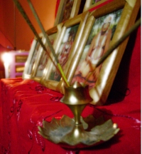

<ion-view style="" id="teachings" title="Teachings">
    <ion-content class="has-header" overflow-scroll="true" padding="true">
        <ion-list style="">
            <ion-item style="" class="item-thumbnail-left item-text-wrap" ui-sref="menu.MeatAndEnv">
                
                <h2>Meat and the Environment</h2>
            </ion-item>
            <ion-item style="" class="item-thumbnail-left item-text-wrap" ui-sref="menu.NoTea">
                
                <h2>Why avoid tea?</h2>
            </ion-item>
            <ion-item style="" class="item-thumbnail-left item-text-wrap" ui-sref="menu.NoOnion">
                
                <h2>Why No Onions and Garlic?</h2>
            </ion-item>
            <ion-item style="" class="item-thumbnail-left item-text-wrap" ui-sref="menu.HowToChant">
                
                <h2>How To Chant On Japa Beads</h2>
            </ion-item>
            <ion-item style="" class="item-thumbnail-left item-text-wrap" ui-sref="menu.Tilak">
                
                <h2>Tilaka: The Mark of God</h2>
            </ion-item>
            <ion-item style="" class="item-thumbnail-left item-text-wrap" ui-sref="menu.Shiva">
                
                <h2>Is Shiva the Supreme?</h2>
            </ion-item>
            <ion-item style="" class="item-thumbnail-left item-text-wrap" ui-sref="menu.Guru">
                
                <h2>Is a Guru Required?</h2>
            </ion-item>
            <ion-item style="" class="item-thumbnail-left item-text-wrap" ui-sref="menu.Ekadasi">
                
                <h2>The Story of Ekadasi</h2>
            </ion-item>
            <ion-item style="" class="item-thumbnail-left item-text-wrap" ui-sref="menu.Offering">
                
                <h2>How to Offer Your Food to Krishna</h2>
            </ion-item>
            <ion-item style="" class="item-thumbnail-left item-text-wrap" ui-sref="menu.KCAtHome">
                
                <h2>Krishna Consciousness at Home</h2>
            </ion-item>
        </ion-list>
    </ion-content>
</ion-view>